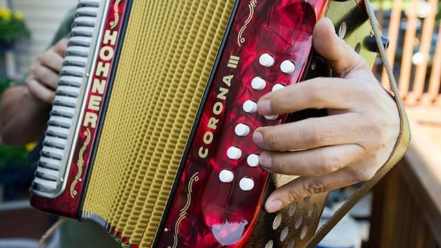

Juego de cartas de memoria.
Mezcla las cartas
Baraja bien las 18 cartas y colócalas boca abajo sobre la mesa en filas ordenadas. Pueden ser 3 filas de 6 o 4 filas de 4-5 cartas.
Decide quién empieza
El jugador más joven comienza. Si prefieren, pueden sortear con papel-tijera-piedra. El turno sigue en sentido de las manecillas del reloj.
Asigna un espacio a cada quien
Cada jugador debe tener espacio a su lado para apilar las parejas que vaya ganando durante la partida.
Voltea la primera carta
En tu turno, elige cualquier carta boca abajo y voltéala para que todos puedan verla.
Voltea la segunda carta
Elige una segunda carta diferente e intenta encontrar la igual a la primera. ¡Todos miran y recuerdan!
¿Par encontrado?
Si las dos cartas muestran el mismo dibujo, ¡hiciste pareja! Guarda ese par y vuelve a jugar de inmediato un turno extra.
No coinciden — voltéalas
Si las cartas son distintas, vólvelas boca abajo en el mismo lugar. ¡Memoriza bien sus posiciones! Pasa el turno al siguiente jugador.
¡Fin del juego!
Cuando todas las parejas han sido descubiertas, cada jugador cuenta sus pares. El que más tenga, ¡gana la partida!
Mirar está prohibido: No puedes volver a mirar una carta boca abajo después de que el turno pasó. ¡Solo la memoria vale!
Turno rápido: Si hay jugadores pequeños, pueden poner un límite de 15 segundos por turno para hacerlo más emocionante.
Sin ayudas: No se puede señalar, soplar ni dar pistas a otro jugador. ¡Cada quien defiende sus propios pares!
Voltear obligatorio: Una vez tocas una carta, debes voltearla. No puedes cambiar de decisión a mitad de turno.
Turno extra dorado: Si encuentras un par, juegas de nuevo. Puedes encadenar varios pares seguidos si tu memoria es buena.
El Festival de la Leyenda Vallenata se celebra cada año en Valledupar, Cesar, desde 1968. En 2015, la UNESCO declaró la música vallenata tradicional como Patrimonio Cultural Inmaterial de la Humanidad.